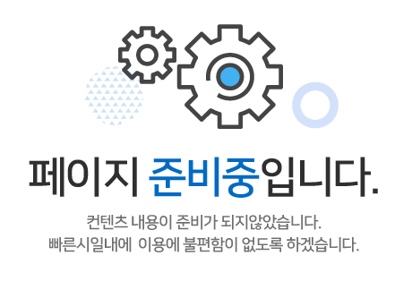

Java
Java SpringBoot
SpringBoot JSP/JSTL
JSP/JSTL MyBatis
MyBatis HTML5
HTML5 CSS
CSS JS/Jquery
JS/Jquery BootStrap
BootStrap
 MySql
MySql MariaDB
MariaDB OracleDB
OracleDB Eclipse
Eclipse Git
Git AWS
AWS STS4
STS4 HeidiSQL
HeidiSQL
SpringBoot기반 FINAL PROJECT(팀 프로젝트) 2023.08.03 ~ [개발인원: 5명]
그룹웨어 프로젝트 (진행중)

Keyword
# 그룹웨어 # Spring Boot # MVC # Maven # MyBatis # Ajax
# 전자결재 # 일정관리 # AS # 회의실예약 # 인사관리 # 게시판
목표
1. 요구사항정의서, wbs, 화면설계서 작성
2. SpringBoot를 사용하여 MVC구조에 맞게 프로젝트 구현
3. 전자결재기능 구현 및 업무지원관리 시스템 구현
담당역할
AS회사 그룹웨어로써 수리 자재 관리 및, 장비 관리,장비 대여, AS신청~완료 기능 담당
1. 자재 관리
1) 자재 부모 테이블과 자식 테이블을 join하여 리스트 출력
2) 모달을 통한 자재 추가 기능
3) 자재 비활성화 기능 구현
4) 자재 목록 엑셀 다운 기능
2. 장비 관리
1) 장비 리스트 출력
2) 모달을 통한 장비 추가 기능
3) 장비 점검일 갱신 기능 (점검일이 30일 이내면 해당 장비 주황색 표시 지났다면 빨간색 표시로 확인 가능)
4) 장비 사용 내역 테이블을 활용한 장비 대여 기능 (비활성화 된 장비는 대여 불가 및 이미 대여중인 장비 대여 불가)
5) 장비 비활성화 기능 (대여중인 장비는 비활성화 불가)
6) 장비 상세보기 출력 (상세보기에서 해당 장비의 총 사용 내역 목록 함께 출력)
7) 개인 장비 사용내역을 출력 하여 대여중인 장비 반납 기능 구현
8) 장비 목록 엑셀 다운 기능
3. AS접수 ~ 완료 기능 구현
1) AS접수 추가 기능 (초기 상태 값 : 대기중)
2) 대기중 리스트 모달 에서 null값 입력 후 수리중으로 수정 기능 (상태 값 : 대기중-> 수리중)
3) 수리중 리스트 모달 에서 사용한 자재 개수와 수량 입력시 가격 자동 입력 기능 및 수리 완료 처리 기능
4) 수리 완료시 수리 자재 테이블 해당 수리 번호를 외래키로 잡아 사용한 자재 수 만큼 추가 기능
5) 자재 테이블 수리에 사용한 자재 수 만큼 해당 자재 개수 감소 기능
6) 대기중,수리중,수리완료 목록 엑셀 다운 기능
Development Environment
OS : Windows11
Library : BootStrap5, JSTL(1.2), jQuery(3.7),MyBatis
Language : HTML5, CSS3, Java(JDK 17), JavaScript, JSP, mySql
DB : Maria DataBase 10.5.18
WAS : Apache Tomcat 9.0
형상관리서버 : Github
IDE : Spring Tools 4 (4.17.2)
Service Environment
OS: Ubuntu (18.04)
Platform : AWS Lightsail
Database : Maria DataBase 10.5.18
Language : Java 17.0.7